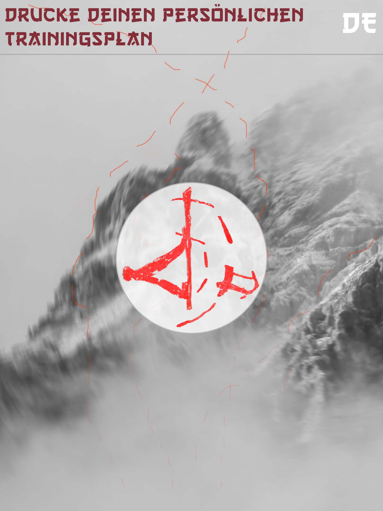
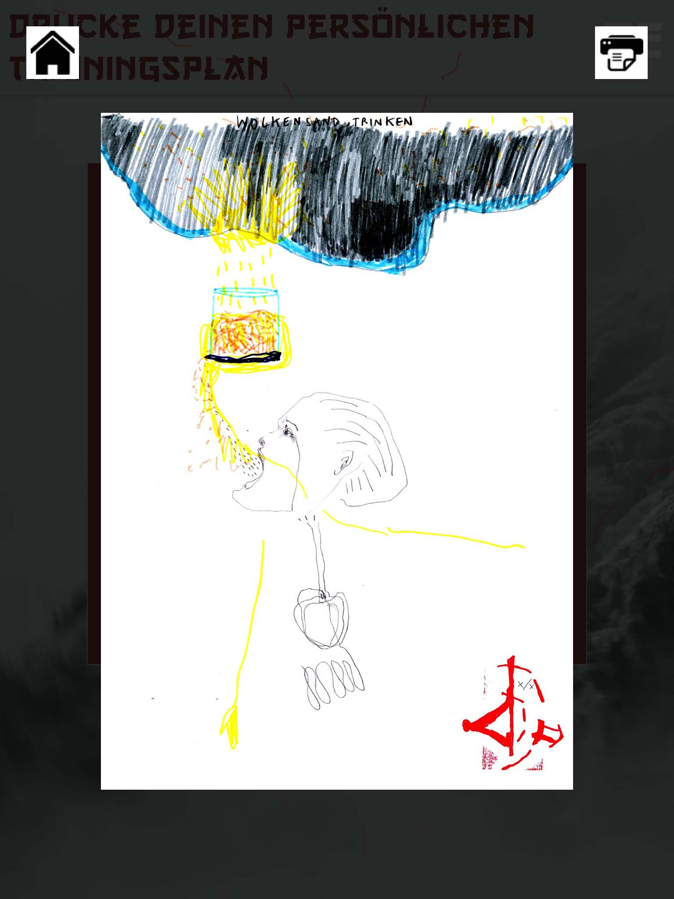
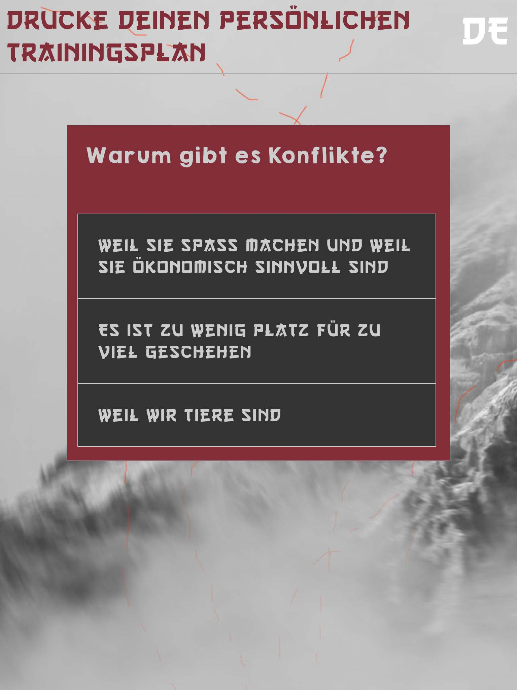
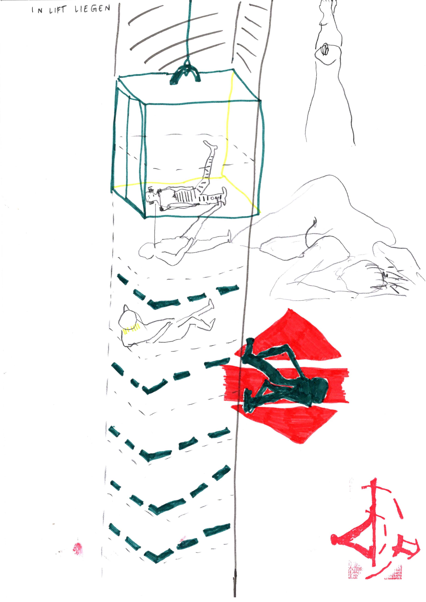
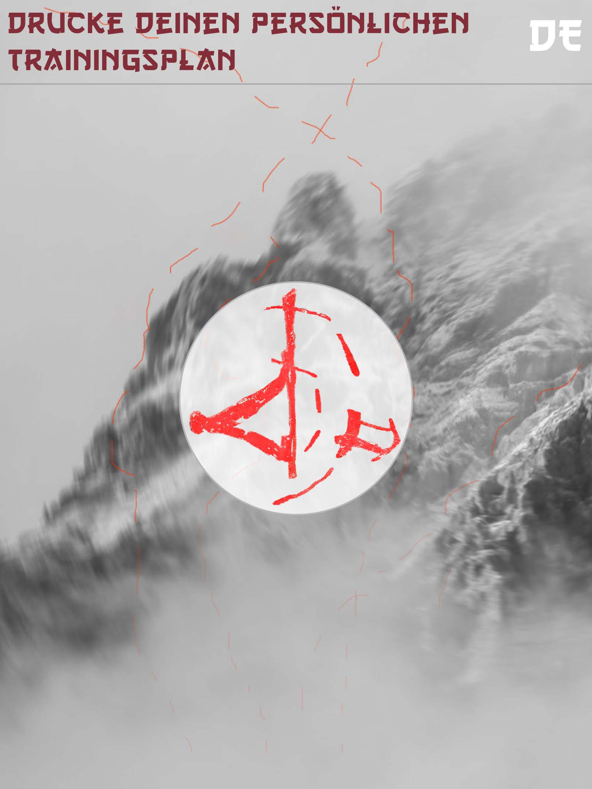
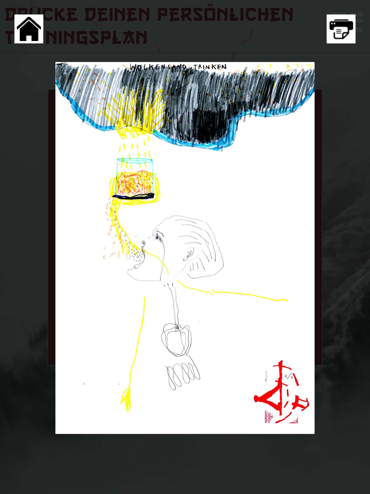
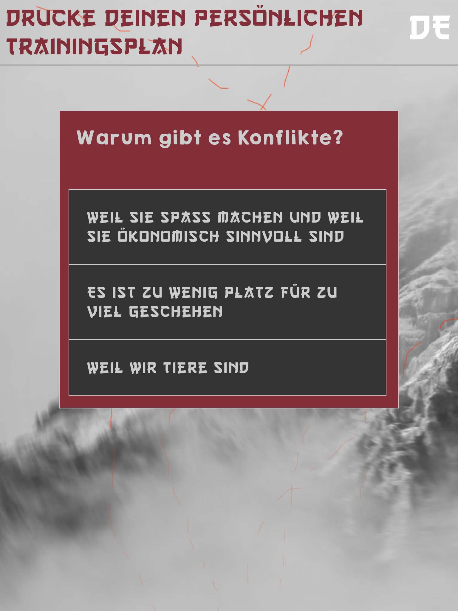
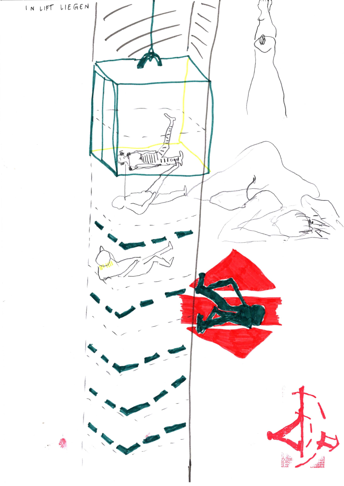

> to selected works
vertical movement gym department model
2018
4 x 4 x 4 m
mixed media
„In her multi-part installations, Olivia Abächerli addresses the tension between the individual and the collective as well as between private and political. Starting point of ‚vertical movement gym department model‘ is the recurring political debate on immigration. Countering the often demanded isolation to the outside, the artist proposes another solution: The boat is just not full if we move our bodies not only vertically, but also horizontally. Transferred into the space, we move accordingly on the vertical instead of on the horizontal. Olivia Abächerli offers in her installation a training center for vertical polarity reversal. In addition to devices, objects and instructions, an individual training plan can be created and printed out through using an interactive questionnaire. The work examines the political potential of fiction, whereby it moves on a fine line between corporate design and rudimentary sketchiness, as well as a concrete proposal for a solution and an intimate dream.“
- translated from a text written by Barbara Ruf